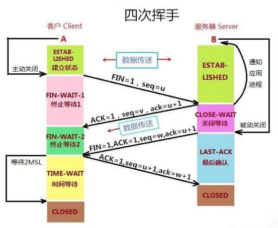

分层概念
应用层
- 网络服务与最终用户的一个接口。
- 协议有：HTTP FTP TFTP SMTP SNMP DNS TELNET HTTPS POP3 DHCP
表示层
- 数据的表示、安全、压缩。（在五层模型里面已经合并到了应用层）
- 格式有，JPEG、ASCll、EBCDIC、加密格式等
会话层
- 建立、管理、终止会话。（在五层模型里面已经合并到了应用层）
- 对应主机进程，指本地主机与远程主机正在进行的会话
传输层
- 定义传输数据的协议端口号，以及流控和差错校验。
- 协议有：TCP UDP，数据包一旦离开网卡即进入网络传输层
网络层
- 进行逻辑地址寻址，实现不同网络之间的路径选择。
- 协议有：ICMP IGMP IP（IPV4 IPV6）
数据链路层
- 建立逻辑连接、进行硬件地址寻址、差错校验等功能。（由底层网络定义协议）
- 将比特组合成字节进而组合成帧，用MAC地址访问介质，错误发现但不能纠正。
物理层
- 建立、维护、断开物理连接。（由底层网络定义协议）
- TCP/IP 层级模型结构，应用层之间的协议通过逐级调用传输层（Transport layer）、网络层（Network Layer）和物理数据链路层（Physical Data Link）而可以实现应用层的应用程序通信互联。
应用层需要关心应用程序的逻辑细节，而不是数据在网络中的传输活动。应用层其下三层则处理真正的通信细节。在 Internet 整个发展过程中的所有思想和着重点都以一种称为 RFC（Request For Comments）的文档格式存在。针对每一种特定的 TCP/IP 应用，有相应的 RFC 文档。
- 一些典型的 TCP/IP 应用有 FTP、Telnet、SMTP、SNTP、REXEC、TFTP、LPD、SNMP、NFS、INETD 等。RFC 使一些基本相同的 TCP/IP 应用程序实现了标准化，从而使得不同厂家开发的应用程序可以互相通信
Http三次握手和四次挥手
- 1、Http请求是基于Tcp connection这个链接的
- 2、位码即tcp标志位,有6种标示:SYN(synchronous建立联机) 、ACK(acknowledgement 确认)、PSH(push传送)FIN(finish结束)、RST(reset重置)、 URG(urgent紧急)、Sequence number(顺序号码)、Acknowledge number(确认号码)
三次握手

第一次握手：主机A发送位码为syn＝1,随机产生seq number=1234567的数据包到服务器，主机B由SYN=1知道，A要求建立联机；
第二次握手：主机B收到请求后要确认联机信息，向A发送ack number=(主机A的seq+1),syn=1,ack=1,随机产生seq=7654321的包；
第三次握手：主机A收到后检查ack number是否正确，即第一次发送的seq number+1,以及位码ack是否为1，若正确，主机A会再发送ack number=(主机B的seq+1),ack=1，主机B收到后确认seq值与ack=1则连接建立成功。
四次挥手
